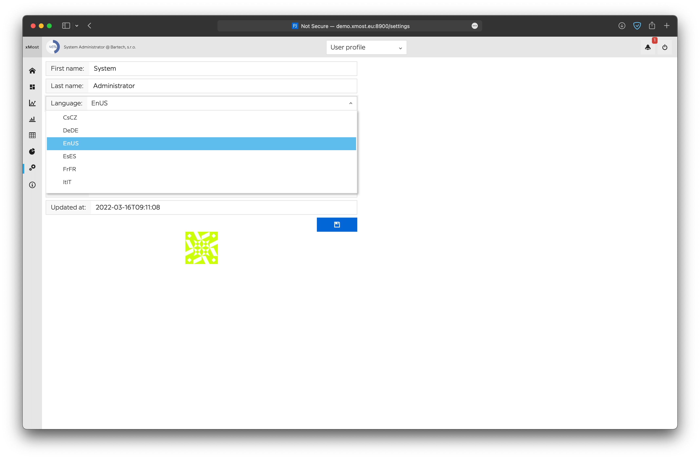
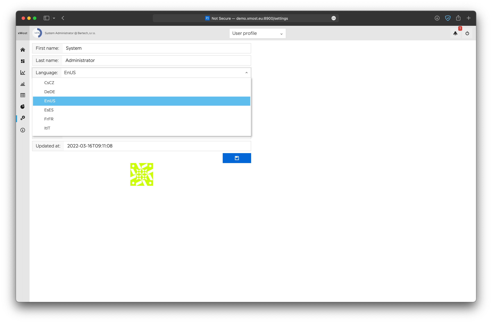
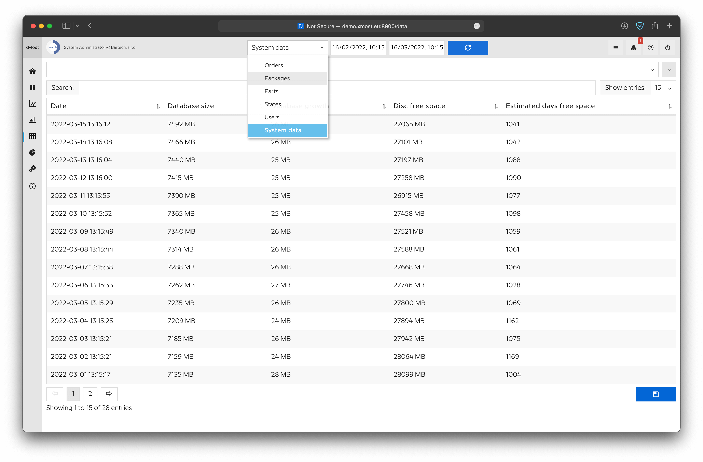
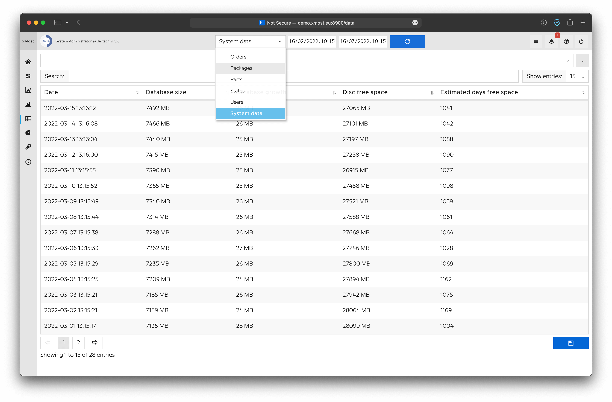

Introduction §
Jahoda tech - we are company that specializes in creating pieces of software for monitoring the production of machinery with its users and in keeping track of your stock by saving all the information in a database that allows you to see everything on a website.
- Robust
- Behavior is correct even for edge cases such as out of memory.
- Optimal
- Write programs the best way they can behave and perform.
- Reusable
- The same code works in many environments which have different constraints.
- Maintainable
- Precisely communicate intent to the compiler and other programmers. The language imposes a low overhead to reading code and is resilient to changing requirements and environments.
Often the most efficient way to learn something new is to see examples, so this documentation shows how to use each of Zig's features. It is all on one page so you can search with your browser's search tool.
The code samples in this document are compiled and tested as part of the main test suite of Zig.
This HTML document depends on no external files, so you can use it offline.
Products §
xMost §
Manufacturing system that is used for collecting data from factory machines and factory operators.
Everything is stored in (postgresql) database with web as user interface.
Additional software is used for processing data.
Installation §
First setup §
Settings §
Particular Settings §
xStock §
Installation §
First setup §
Settings §
Particular Settings §
Services §
Database §
Description
Go module that holds database structure, used in every system service. PostgreSQL 14 is used as a database service.
Installation Information
Install under docker runtime using this dockerfile image with this command:
$docker-compose up -d
Implementation Information
Check the software running with this command:
$docker stats
Database has to be running.
After installation fine tuning
- use https://pgtune.leopard.in.ua/#/
- default: DB version 14
- default: OS Type Linux
- default: DB Type Mixed type of applications
- default: number of connections: 50 default + 10 per 1 workplace (for example: 150 per 10 workplaces)
- update configuration using ALTER SYSTEM tab
- restart database container
System Service §
Description
Go service automatically creates database on its first run, check database size and disc free space. Sends email, when disc space is low.
Installation Information
Install under docker runtime using this dockerfile image with this command:
$docker-compose up -d
Implementation Information
Check the software running with this command:$docker stats
system_service has to be running. No need to make a specific setup.
Socket service §
Description
Go service downloads data from devices using socket communication.
Installation Information
Install under docker runtime using this dockerfile image with this command:
$docker-compose up -d
Implementation Information
Check the software running with this command:$docker stats
socket_service has to be running.
Setup device for download
- 1. Add device to database: insert new data into devices table
- insert device name into name column
- insert proper device_type_id into device_type_id column
- set activated column to true
- insert proper ip address to ip_address column
- insert proper communication port to settings column
- 2. Setup data for download: check data on device in /log directory
- for analog data: insert new data into device_ports table
- insert port name into name column
- insert proper device_id into device_id column
- insert 2 into device_port_type_id column
- insert position from analog.txt into port number column
- insert unit into unit column
- set virtual column to false
- for digital data: insert new data into device_ports table
- insert port name into name column
- insert proper device_id into device_id column
- insert 1 into device_port_type_id column
- insert position from digital.txt into port_number column
- insert unit into unit column
- set virtual column to false
- for serial data: insert new data into device_ports table
- insert port name into name column
- insert proper device_id into device_id column
- insert 3 into device_port_type_id column
- insert position from serial.txt into port_number column
- insert unit into unit column
- set virtual column to false
- for analog data: insert new data into device_ports table
- 3. Setup virtual ports (additional) Virtual ports are calculated from physical data on-the-fly. That means data are inserted into database in exactly the same time as original data from device. To add virtual port
- insert all data into device_ports table as above
- set port_number to specific value not found in physical files (use 101, etc.)
- set virtual to true
- set settings to desired outcome
Settings examples
- virtual analog port example: $20$ * 23: result is whatever data is in port id 2- times 23
- virtual analog port example: $20$ + $21$/2
- virtual digital port example: ($2$ > 1) && ($1$==1): result is 1 if data in port id 2 > 1 and data in port id 1 is 1
- virtual digital port example: ($1$==1) && ($2$==1) && ($3$==0)
- virtual digital port example: ($1$==1) || ($2$==1) || ($3$>==1)
- virtual digital port with CHECKPORT;$23$:$12$;$32$ will check for portid 23 if in its 1 to 0 duration there are signals for port 12 and 23, if there are this virtual port will be saved with duration like port id 23
- physical analog port data replacement on the fly: just paste /200 to save values divided by 200, etc.
- physical digital port with ADDZERO settings will save 1 and 0 immediately when 1 came, ignores original 0 data
State service §
Description
Go service that creates data for workplaces (based on digital and analog records) and inserts them into state_records table Service also creates, closes and updates records in order_records table Service also creates and closes records in downtime_records table Additional SSE server streaming data running on port 91.
Installation Information
Install under docker runtime using this dockerfile image with this command:
$docker-compose up -d
Implementation Information
Check the software running with this command:$docker stats
State_service has to be running.
Setup workplace for processing
1. Add workplace to database: insert new data into workplaces table
-
insert workplace name into name column
-
insert 1 into workplace_section_id column
-
insert 1 into workplace_mode_id column
2. Asign device_ports to workplace in workplace_ports table
-
insert workplace port name into name column
-
assign proper device_port_id into device_port_id column
-
assign proper state_id into state_id column
-
state_id with value 1 has to be assigned to device_port_type.name Digital
-
state_id with value 2 has to be assigned to device_port_type.name Analog
-
-
assign proper workplace_id into workplace_id column
-
assign true for port you want to calculates OK pcs into counter_ok column
-
this port should be of type device_port_type.name Digital
-
-
assign true for port you want to calculates NOK pcs into counter_nok column
-
this port should be of type device_port_type.name Digital
-
System webservice §
Description
Go web service for user UI
Installation Information
Install under docker runtime using this dockerfile image with this command:
$docker-compose up -d
Implementation Information
Check the software running with this command:
$docker stats
System_service has to be running. No need to make a specific setup.
Actual images of this webservice§
 

 

Alarm service §
Description
Go service, that check for alarms and do proper action when alarms are active.
Installation Information
Install under docker runtime using this dockerfile image with this command:
$docker-compose up -d
Implementation Information
Check the software running with this command:
$docker stats
Terminal_service has to be running.
Additional Information
- working with alarms in alarms table
- creates and updates alarm records in alarm_records table
- in alarms_table recipients has to be delimited by "," or ";"
- result of sql query has to be in one column named result with 4 possible outcomes
- true => alarm result is ON
- false => alarm result is OFF
- something (string, number, ...) => alarm result is ON
- nothing (epmty) => alarm result is OFF
Example of sql queries
- Creates alarm_record at the beginning of 12:00 on Saturday
- only on this day and hour, alarm is ON, alarm_record is created at the beginning "true period"
- on another hour and day, alarm is OFF, alarm_record is closed at the beginning of "false period"
select to_char(now(), 'Day') like '%Saturday%' and extract(hour from now()) = 12 as result
select (select count(id) from state_records where id in (select distinct max(id) as id from state_records group by workplace_id) and state_id=3)>5 as result
Alarms example:

Alarm records example:
API service §
Description
API for xmost and xstock
A data transportation system that allows the communication between databases and their data
Installation Information
Install under docker runtime using this dockerfile image with this command:
$docker-compose up -d
Implementation Information
Check the software running with this command:
$docker stats
api_service has to be running.
API description
Load Data:
Stock states:
Example JSON: http://localhost:93/stock_states?date_from=2023-04-02T10:40:00&date_to=2023-08-04T14:40:00&format=json
Example JSON result:
"Result": "OK, data limited to 1000 latest records in selected datetime",
"Data": [
{
"ID": 21592,
"CreatedAt": "2023-06-12T11:48:14.958297+02:00",
"UpdatedAt": "2023-06-12T11:48:14.958297+02:00",
"StockID": 1,
"StockName": "Hlavni sklad",
"ProductID": 4320,
"ProductName": "Paleta přepravní 700x JD AZ204425 3160x2185mm - nové č.2 (varianta 3 - standardní profily, dle uchycení stroje na paletu))[800001020514079]",
"SerialNumberID": {
"Int32": 0,
"Valid": false
},
"BatchNumberID": {
"Int32": 0,
"Valid": false
},
"StockLocationID": {
"Int32": 0,
"Valid": false
},
"Count": {
"Int32": 3,
"Valid": true
},
"Volume": {
"Float64": 0,
"Valid": false
},
"Note": ""
}
]
}
Example XML: http://localhost:93/stock_states?date_from=2023-06-11T10:40:00&date_to=2023-06-13T14:40:00&format=xml
Example XML result:
{{xmlString}}OK, data limited to 1000 latest records in selected datetime 21592 2023-06-12T11:48:14.958297+02:00 2023-06-12T11:48:14.958297+02:00 1 Hlavni sklad 4320 Paleta přepravní 700x JD AZ204425 3160x2185mm - nové č.2 (varianta 3 - standardní profily, dle uchycení stroje na paletu))[800001020514079] 0 false 0 false 0 false 3 true 0 false
xStock Webservice §
Description
Go web service UI for stock system
Installation Information
Install under docker runtime using this dockerfile image with this command:
$docker-compose up -d
Implementation Information
Check the software running with this command:
$docker stats
System_service has to be running. No need to make a specific setup.
xStock Terminal webservice §
Description
Go web service for warehouses for use on touch terminals
Installation Information
- 1. Sign in into android obchodu
- 2. Install Shortcut Maker and Fully Kiosk Browser
- 3. Run Fully Kiosk Browser and edit Start URL to xStock Server URL
- 4. Run Shortcut Maker
- 5. Create a new shortcut from Kiosk Browser, rename to xStock and add icon from icon folder